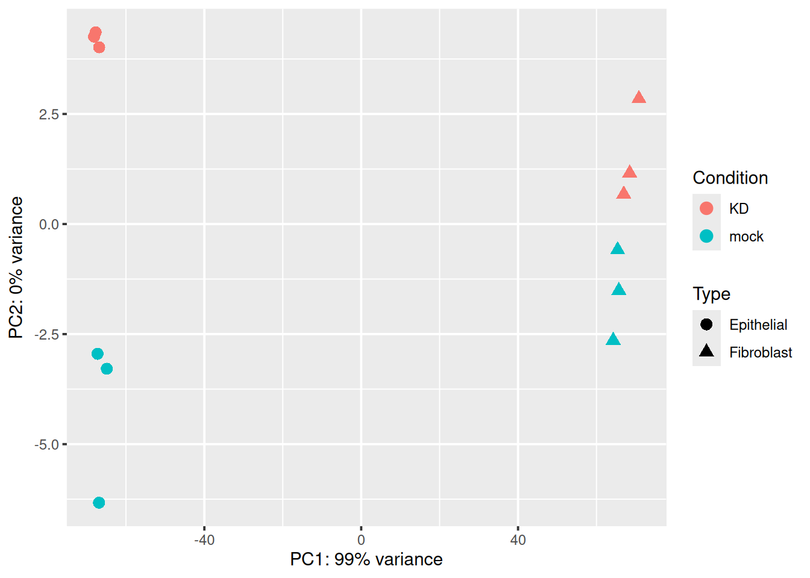
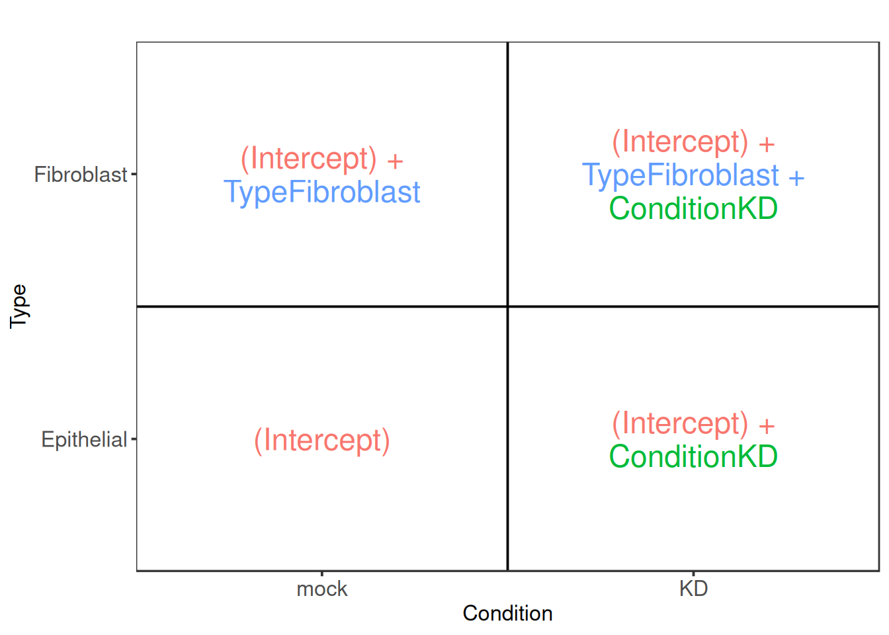
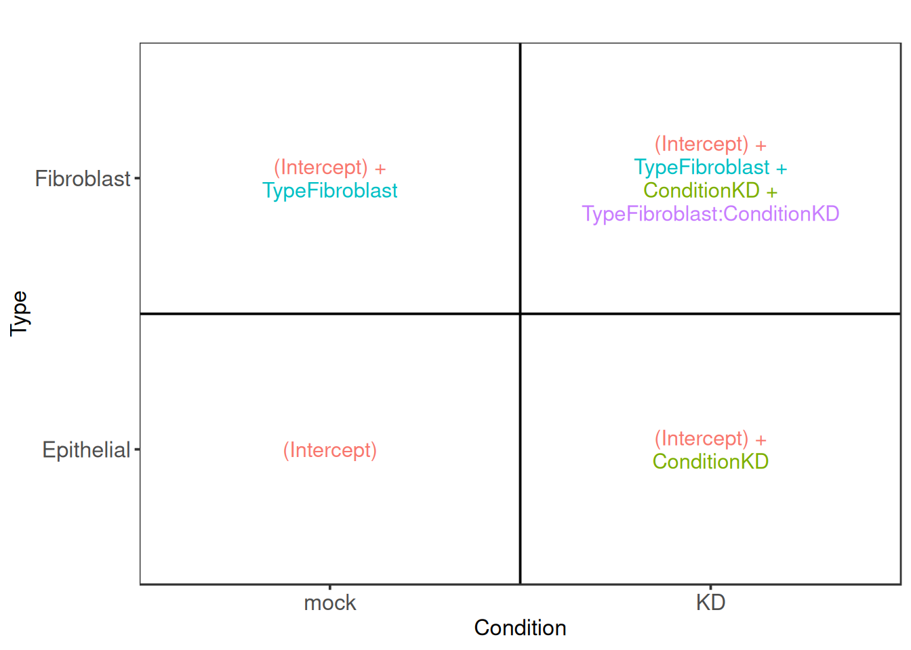
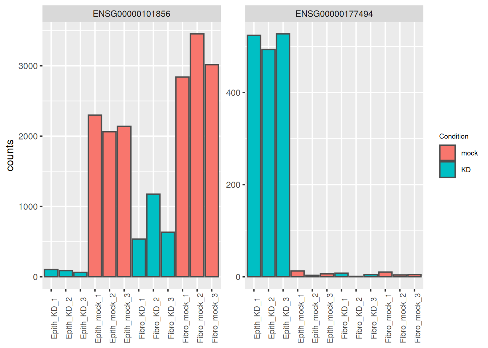
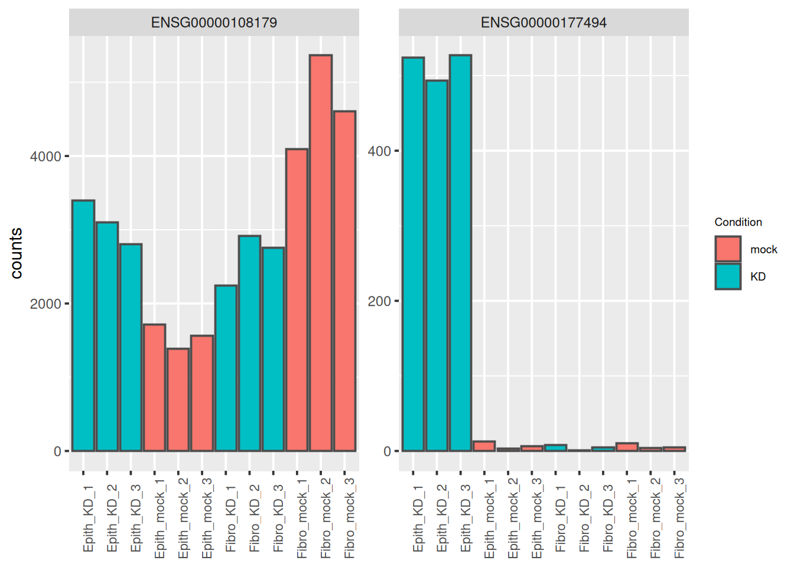

Learning Objectives
The goal of this chapter is
The dataset that we used previously was quite simple, we had 3 KD samples vs 3 control samples. But the original dataset was in reality a bit more complex, as the KD experiments were actually done on 2 different cell lines. So we have now 12 samples. The 6 first samples correspond to an epithelial cell line (Cell1), and 6 other samples correspond to a fibroblast cell line (Cell2).
load("wsbim2122_data/deseq2/coldata_both.rda")
load("wsbim2122_data/deseq2/counts_both.rda")
coldata## Cell Type Condition
## sample1 Cell1 Epithelial mock
## sample2 Cell1 Epithelial mock
## sample3 Cell1 Epithelial mock
## sample4 Cell1 Epithelial KD
## sample5 Cell1 Epithelial KD
## sample6 Cell1 Epithelial KD
## sample7 Cell2 Fibroblast mock
## sample8 Cell2 Fibroblast mock
## sample9 Cell2 Fibroblast mock
## sample10 Cell2 Fibroblast KD
## sample11 Cell2 Fibroblast KD
## sample12 Cell2 Fibroblast KDLet’s start by a PCA analysis, that will help us to define the most appropriate design to use for the analysis.
To generate the DESeqDataSet, remember that we have to specify the experimental design.
We will see that can use different experimental designs for the analysis, depending on the biological questions that we want to answer. We will discuss about this latter. At this step, as we just want to do a PCA (that will anyway be blind to the sample information specified by the design formula), we can use a design ~ 1.
dds <- DESeqDataSetFromMatrix(countData = counts,
colData = coldata,
design = ~ 1)
dds <- DESeq(dds)
rld <- rlogTransformation(dds)
pca_data <- plotPCA(rld,
intgroup = c("Condition", "Type"),
returnData = TRUE)
percentVar <- round(100 * attr(pca_data, "percentVar"))
ggplot(pca_data,
aes(x = PC1, y = PC2,
color = Condition, shape = Type)) +
geom_point(size = 3) +
xlab(paste0("PC1: ",percentVar[1],"% variance")) +
ylab(paste0("PC2: ",percentVar[2],"% variance"))
We can see from this PCA plot that PC1 separates the samples based on the cell line origin, while PC2 separates the samples based on the siRNA treatment. This means that most of the variability comes from the cell origin.
The design used for the analysis will have to take this cell effect into account.
Different designs can be used to analyse this dataset, depending on the biological questions that are asked.
Which genes are consistently affected by the KD in both cell lines?
Which genes are significantly affected by the KD in the epithelial cells?
Which genes are significantly affected by the KD in the fibroblasts?
Which genes are not affected in the same way by the KD in the two cell lines
To take into account the condition effect while controlling the cell origin, we can use the following design:
design = ~ Cell + Condition
Let’s run the analysis with this design (we have to re-run the
DESeqDataSetFromMatrix() and DESeq() functions)
dds <- DESeqDataSetFromMatrix(countData = counts,
colData = coldata,
design = ~ Type + Condition)
# Set the mock level as the reference level
dds$Condition <- relevel(dds$Condition, ref = "mock")
# Set the Epithelial cells as the reference level
dds$Type <- relevel(dds$Type, ref = "Epithelial")
dds <- DESeq(dds)As we have seen previously, the resultsNames() function gives the
names of the coefficients that can be extracted.
resultsNames(dds)## [1] "Intercept" "Type_Fibroblast_vs_Epithelial"
## [3] "Condition_KD_vs_mock"The linear model set with this design can be written
\[log2(q_{ij}) = Intercept + Type\_Fibroblast\_vs\_Epithelial.x_j + Condition\_KD\_vs\_mock.y_j + \epsilon\]
The \(Intercept\) represents the log2 expression level in the reference (in mock Epithelial cells).
The \(Type\_Fibroblast\_vs\_Epithelial\) coefficient corresponds to the log2FC between fibroblasts and epithelial cells. \(x_j = 0\) if the sample j corresponds to epithelial cells, and \(x_j = 1\) if the sample j corresponds to fibroblasts.
The \(Condition\_KD\_vs\_mock\) coefficient corresponds to the log2FC between KD and mock cells. \(y_j = 0\) if the sample j corresponds to mock cells, and \(y_j\) = 1 if the sample j corresponds to KD cells.
The following figure (generated with the ExploreModelMatrix package) illustrates the value of the linear predictor of a generalized linear model for each combination of input variables. It can help to understand and to generate contrasts.

From this figure, we can see how the genes log2 expression values are modelized in the different samples.
In mock epithelial cells \(log2(q_{Gene_i\_Epithelial\_mock}) = Intercept\)
In KD epithelial cells \(log2(q_{Gene_i\_Epithelial\_KD}) = Intercept + Condition\_KD\_vs\_mock\)
In mock fibroblasts cells \(log2(q_{Gene_i\_Fibroblast\_mock}) = Intercept + Type\_Fibroblast\_vs\_Epithelial\)
In KD fibroblasts cells \(log2(q_{Gene_i\_Fibroblast\_KD}) = Intercept + Type\_Fibroblast\_vs\_Epithelial + Condition\_KD\_vs\_mock\)
To identify the genes that are consistently affected by the KD in both cell lines, we will have to test (for each gene) the Condition_KD_vs_mock coefficient, to see if it is significantly different from zero.
Remember that we can use the name parameter of the results() function to specify the
coefficient that we want to extract (here the Condition_KD_vs_mock coefficient).
This will test if genes are differentially expressed in KD cells versus
mock cells.
res <- results(dds, name = "Condition_KD_vs_mock")
res_tbl <- as_tibble(res, rownames = "ENSEMBL") %>%
arrange(padj)
head(res_tbl)## # A tibble: 6 × 7
## ENSEMBL baseMean log2FoldChange lfcSE stat pvalue padj
## <chr> <dbl> <dbl> <dbl> <dbl> <dbl> <dbl>
## 1 ENSG00000144674 2735. 1.11 0.0950 11.6 2.33e-31 3.87e-27
## 2 ENSG00000152700 967. 1.18 0.106 11.2 4.12e-29 3.03e-25
## 3 ENSG00000104763 3267. -1.22 0.109 -11.2 5.46e-29 3.03e-25
## 4 ENSG00000122557 542. 0.945 0.0865 10.9 8.77e-28 3.65e-24
## 5 ENSG00000257103 2297. 1.37 0.130 10.5 9.08e-26 3.02e-22
## 6 ENSG00000116962 5115. 1.63 0.160 10.2 2.27e-24 6.29e-21The normalised counts of the genes with the lowest p-adjusted values are plotted bellow. We can see that these genes correspond to genes that are highly affected by the siRNA in both cells lines.
as_tibble(counts(dds[res_tbl$ENSEMBL[1:2], ], normalize = TRUE),
rownames = 'ENSEMBL') %>%
pivot_longer(names_to = "sample", values_to = "counts", -ENSEMBL) %>%
left_join(as_tibble(colData(dds), rownames = "sample")) %>%
mutate(name = paste0(substr(Type, 1, 5), '_', Condition, '_', 1:3)) %>%
ggplot(aes(x = name, y = counts, fill = Condition)) +
geom_bar(stat = 'identity', color = "gray30") +
facet_wrap( ~ ENSEMBL, scales = "free") +
theme(axis.text.x = element_text(size = 8, angle = 90),
axis.title.x = element_blank(),
legend.position = "right",
legend.text = element_text(size = 7),
legend.title = element_text(size = 7))## Joining with `by = join_by(sample)`Of course if the question of interest was
What are the genes that are differentially expressed in epithelial and fibroblasts?
we would have tested the Type_Fibroblast_vs_Epithelial coefficient.
res <- results(dds, name = "Type_Fibroblast_vs_Epithelial")
res_tbl <- as_tibble(res, rownames = "ENSEMBL") %>%
arrange(padj)
as_tibble(counts(dds[res_tbl$ENSEMBL[1:2], ], normalize = TRUE),
rownames = 'ENSEMBL') %>%
pivot_longer(names_to = "sample", values_to = "counts", -ENSEMBL) %>%
left_join(as_tibble(colData(dds), rownames = "sample")) %>%
mutate(name = paste0(substr(Type, 1, 5), '_', Condition, '_', 1:3)) %>%
ggplot(aes(x = name, y = counts, fill = Condition)) +
geom_bar(stat = 'identity', color = "gray30") +
facet_wrap( ~ ENSEMBL, scales = "free") +
theme(axis.text.x = element_text(size = 8, angle = 90),
axis.title.x = element_blank(),
legend.position = "right",
legend.text = element_text(size = 7),
legend.title = element_text(size = 7))## Joining with `by = join_by(sample)`Interaction terms can be added to the design formula, in order to test the treatment effect in one cell line or the treatment effect that differs across the cell lines.
The design with an interaction could be written \[design = ~ Cell * Condition\] which is equivalent to \[design = ~ Cell + Condition + Cell:Condition\]
Let’s use this design in our analysis (we have to re-run the
DESeqDataSetFromMatrix() and DESeq() functions)
dds <- DESeqDataSetFromMatrix(countData = counts,
colData = coldata,
design = ~ Type * Condition)
# Set the Epithelial cells as the reference level
dds$Type <- relevel(dds$Type, ref = "Epithelial")
# Set the mock condition as the reference level
dds$Condition <- relevel(dds$Condition, ref = "mock")
dds <- DESeq(dds)The resultsNames() function gives the names of results that can be extracted.
resultsNames(dds)## [1] "Intercept" "Type_Fibroblast_vs_Epithelial"
## [3] "Condition_KD_vs_mock" "TypeFibroblast.ConditionKD"The linear model used with this design can be written
\[log2(q_{ij}) = Intercept + Type\_Fibroblast\_vs\_Epithelial.x_j + Condition\_KD\_vs\_mock.y_j + TypeFibroblast.ConditionKD.z_j + \epsilon\]
The \(Intercept\) represents the log2 expression level in the reference (in mock Cell1).
The \(Type\_Fibroblast\_vs\_Epithelial\) coefficient corresponds to the log2FC between mock fibroblasts and mock epithelial cells. \(x_j = 0\) if the sample j corresponds to fibroblasts, and \(x_j = 1\) if the sample j corresponds to epithelial cells.
The \(Condition\_KD\_vs\_mock\) coefficient corresponds to the log2FC between KD and mock cells in the reference cells (here epithelial cells). \(y_j = 0\) if the sample j corresponds to mock cells, and \(y_j\) = 1 if the sample j corresponds to KD cells.
The \(TypeFibroblast.ConditionKD\) coefficient corresponds to the the extra KD effect in KD-fibroblasts compared to KD-epitelial cells. \(z_j = 0\) if the sample j corresponds to mock cells or to epithial cells, and \(z_j = 1\) if the sample j corresponds to KD-fibroblasts.
This is summarized in the following figure:

From this figure, we can see how the genes log2 expression values are modelized in the different samples.
in mock epithelial cells \(log2(q_{Gene_i\_Epithelial\_mock}) = Intercept\)
in KD epithelial cells \(log2(q_{Gene_i\_Epithelial\_KD}) = Intercept + Condition\_KD\_vs\_mock\)
in mock fibroblasts cells \(log2(q_{Gene_i\_Fibroblast\_mock}) = Intercept + Type\_Fibroblast\_vs\_Epithelial\)
in KD fibroblasts cells \(log2(q_{Gene_i\_Fibroblast\_KD}) = Intercept + Type\_Fibroblast\_vs\_Epithelial + Condition\_KD\_vs\_mock + TypeFibroblast.ConditionKD\)
As the epithelial cells were set as the reference cells, the Condition_KD_vs_mock coefficient should be extracted to test the effect of the KD in these cells.
In fact, testing the siRNA effect in epithelial cells is like comparing the logFC between epithelial KD and epithelial mock cells.
\[log2(\frac{q_{Gene_i\_Epithelial\_KD}}{q_{Gene_i\_Epithelial\_mock}})\]
\[= log2(q_{Gene_i\_Epithelial\_KD}) - log2(q_{Gene_i\_Epithelial\_mock})\] \[= Intercept + Condition\_KD - Intercept = Condition\_KD\]
res <- results(dds, name = "Condition_KD_vs_mock")
res_tbl <- as_tibble(res, rownames = "ENSEMBL") %>%
arrange(padj)
head(res_tbl)## # A tibble: 6 × 7
## ENSEMBL baseMean log2FoldChange lfcSE stat pvalue padj
## <chr> <dbl> <dbl> <dbl> <dbl> <dbl> <dbl>
## 1 ENSG00000101856 1535. -4.66 0.253 -18.4 1.76e-75 3.17e-71
## 2 ENSG00000177494 133. 6.26 0.366 17.1 1.09e-65 9.77e-62
## 3 ENSG00000008513 1198. 3.02 0.223 13.6 7.08e-42 4.25e-38
## 4 ENSG00000175315 106. 4.30 0.329 13.1 5.74e-39 2.58e-35
## 5 ENSG00000128245 2877. 2.07 0.166 12.4 1.76e-35 6.33e-32
## 6 ENSG00000115107 579. 3.46 0.279 12.4 3.31e-35 9.92e-32as_tibble(counts(dds[res_tbl$ENSEMBL[1:2], ], normalize = TRUE),
rownames = 'ENSEMBL') %>%
pivot_longer(names_to = "sample", values_to = "counts", -ENSEMBL) %>%
left_join(as_tibble(colData(dds), rownames = "sample")) %>%
mutate(name = paste0(substr(Type, 1, 5), '_', Condition, '_', 1:3)) %>%
ggplot(aes(x = name, y = counts, fill = Condition)) +
geom_bar(stat = 'identity', color = "gray30") +
facet_wrap( ~ ENSEMBL, scales = "free") +
theme(axis.text.x = element_text(size = 8, angle = 90),
axis.title.x = element_blank(),
legend.position = "right",
legend.text = element_text(size = 7),
legend.title = element_text(size = 7))## Joining with `by = join_by(sample)`
As the fibroblasts cells were NOT set as the reference cells, it is less trivial to extract the right coefficients to test the KD effect in fibroblasts.
But remember that testing the siRNA effect in fibroblast cells is like comparing the logFC between fibroblast KD and fibroblast mock cells.
\[log2(\frac{q_{Gene_i\_Fibroblast\_KD}}{q_{Gene_i\_Fibroblast\_mock}})\]
\[= log2(q_{Gene_i\_Fibroblast\_KD}) - log2(q_{Gene_i\_Fibroblast\_mock})\] \[= (Intercept + Condition\_KD + Type\_Fibroblast\_vs\_Epithelial + TypeFibroblast.ConditionKD )\] \[ - (Intercept + Type\_Fibroblast\_vs\_Epithelial) \] \[= Condition\_KD + TypeFibroblast.ConditionKD \]
So to test the KD effect in fibroblasts, we have to extract both Condition_KD_vs_mock and TypeFibroblast.ConditionKD coefficients.
res <- results(dds,
list(c("Condition_KD_vs_mock", "TypeFibroblast.ConditionKD")))
res_tbl <- as_tibble(res, rownames = "ENSEMBL") %>%
arrange(padj)
head(res_tbl)## # A tibble: 6 × 7
## ENSEMBL baseMean log2FoldChange lfcSE stat pvalue padj
## <chr> <dbl> <dbl> <dbl> <dbl> <dbl> <dbl>
## 1 ENSG00000151632 500. -2.99 0.291 -10.3 1.12e-24 1.55e-20
## 2 ENSG00000271303 409. -2.14 0.232 -9.23 2.60e-20 1.80e-16
## 3 ENSG00000138678 366. -1.86 0.207 -8.99 2.51e-19 1.16e-15
## 4 ENSG00000101856 1535. -1.99 0.240 -8.28 1.19e-16 4.14e-13
## 5 ENSG00000136167 150. -2.88 0.354 -8.15 3.73e-16 1.04e-12
## 6 ENSG00000144674 2735. 1.04 0.129 8.05 8.22e-16 1.63e-12as_tibble(counts(dds[res_tbl$ENSEMBL[1:2], ], normalize = TRUE),
rownames = 'ENSEMBL') %>%
pivot_longer(names_to = "sample", values_to = "counts", -ENSEMBL) %>%
left_join(as_tibble(colData(dds), rownames = "sample")) %>%
mutate(name = paste0(substr(Type, 1, 5), '_', Condition, '_', 1:3)) %>%
ggplot(aes(x = name, y = counts, fill = Condition)) +
geom_bar(stat = 'identity', color = "gray30") +
facet_wrap( ~ ENSEMBL, scales = "free") +
theme(axis.text.x = element_text(size = 8, angle = 90),
axis.title.x = element_blank(),
legend.position = "right",
legend.text = element_text(size = 7),
legend.title = element_text(size = 7))## Joining with `by = join_by(sample)`Note that another possibility would have been to set the fibroblasts as the reference cells, re-run the whole analysis, and to simply extract the Condition_KD_vs_mock coefficient.
dds_test <- DESeqDataSetFromMatrix(countData = counts,
colData = coldata,
design = ~ Type * Condition)
# Set the Epithelial cells as the reference level
dds_test$Type <- relevel(dds_test$Type, ref = "Fibroblast")
# Set the mock condition as the reference level
dds_test$Condition <- relevel(dds_test$Condition, ref = "mock")
dds_test <- DESeq(dds_test)
res <- results(dds_test,
name = "Condition_KD_vs_mock")
res_tbl <- as_tibble(res, rownames = "ENSEMBL") %>%
arrange(padj)
head(res_tbl)## # A tibble: 6 × 7
## ENSEMBL baseMean log2FoldChange lfcSE stat pvalue padj
## <chr> <dbl> <dbl> <dbl> <dbl> <dbl> <dbl>
## 1 ENSG00000151632 500. -2.99 0.291 -10.3 1.12e-24 1.55e-20
## 2 ENSG00000271303 409. -2.14 0.232 -9.23 2.60e-20 1.80e-16
## 3 ENSG00000138678 366. -1.86 0.207 -8.99 2.51e-19 1.16e-15
## 4 ENSG00000101856 1535. -1.99 0.240 -8.28 1.19e-16 4.14e-13
## 5 ENSG00000136167 150. -2.88 0.354 -8.15 3.73e-16 1.04e-12
## 6 ENSG00000144674 2735. 1.04 0.129 8.05 8.22e-16 1.63e-12Which genes are not affected in the same way by the KD in the two cell lines? In other terms, we are testing the KD effects that are significantly different in both cell lines. This can be done by extracting the TypeFibroblast.ConditionKD coefficient. In fact this coefficient corresponds to the extra KD effect ocuring in fibroblasts compared to epitelial cells.
If the effect of the KD is similar in both cell types, we expect the TypeFibroblast.ConditionKD coefficient to be nearly 0.
If the effect of the KD is higher in fibroblasts than in epithelial cells, we expect the TypeFibroblast.ConditionKD coefficient to be higher than 0.
If the effect of the KD is lower in fibroblasts than in epithelial cells, we expect the TypeFibroblast.ConditionKD coefficient to be lower than 0.
res <- results(dds, name = "TypeFibroblast.ConditionKD")
res_tbl <- as_tibble(res, rownames = "ENSEMBL") %>%
arrange(padj)
head(res_tbl)## # A tibble: 6 × 7
## ENSEMBL baseMean log2FoldChange lfcSE stat pvalue padj
## <chr> <dbl> <dbl> <dbl> <dbl> <dbl> <dbl>
## 1 ENSG00000177494 133. -6.76 0.670 -10.1 5.97e-24 8.70e-20
## 2 ENSG00000198846 238. -2.95 0.297 -9.93 3.04e-23 2.21e-19
## 3 ENSG00000100097 20864. 1.93 0.196 9.84 7.78e-23 3.78e-19
## 4 ENSG00000171132 335. -2.33 0.255 -9.12 7.49e-20 2.73e-16
## 5 ENSG00000108179 2994. -1.83 0.201 -9.08 1.07e-19 3.13e-16
## 6 ENSG00000008513 1198. -2.77 0.313 -8.86 7.85e-19 1.91e-15We can see that gene ENSG00000177494 (with the lowest p-value) has as highly negative log2FC. This means that the effect of the siRNA treatment is much lower in fibroblasts than in epithelial cells.
Gene ENSG00000108179 is also an illustrative example, as its value is decreased by the siRNA treatment in the epithelial cells, while on the contrary it is increased by the treatment in the fibroblast cells.
as_tibble(counts(dds[res_tbl$ENSEMBL[c(1,5)], ], normalize = TRUE),
rownames = 'ENSEMBL') %>%
pivot_longer(names_to = "sample", values_to = "counts", -ENSEMBL) %>%
left_join(as_tibble(colData(dds), rownames = "sample")) %>%
mutate(name = paste0(substr(Type, 1, 5), '_', Condition, '_', 1:3)) %>%
ggplot(aes(x = name, y = counts, fill = Condition)) +
geom_bar(stat = 'identity', color = "gray30") +
facet_wrap( ~ ENSEMBL, scales = "free") +
theme(axis.text.x = element_text(size = 8, angle = 90),
axis.title.x = element_blank(),
legend.position = "right",
legend.text = element_text(size = 7),
legend.title = element_text(size = 7))## Joining with `by = join_by(sample)`
Page built: 2023-08-26 using R version 4.3.1 (2023-06-16)